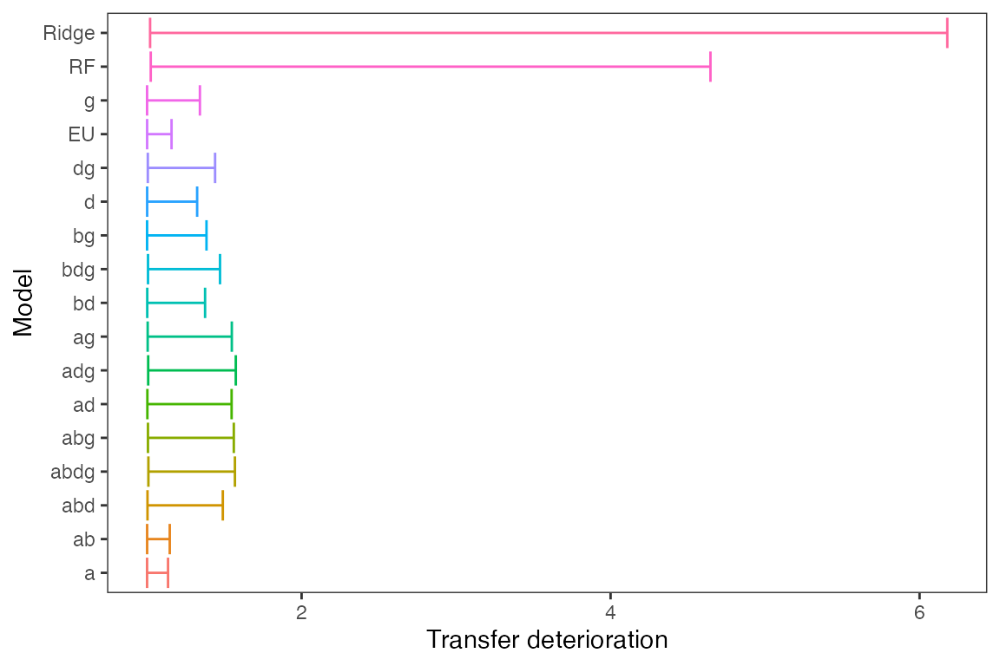
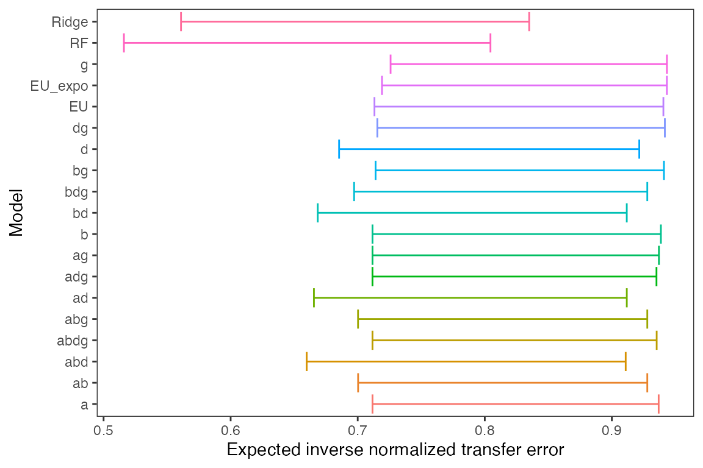
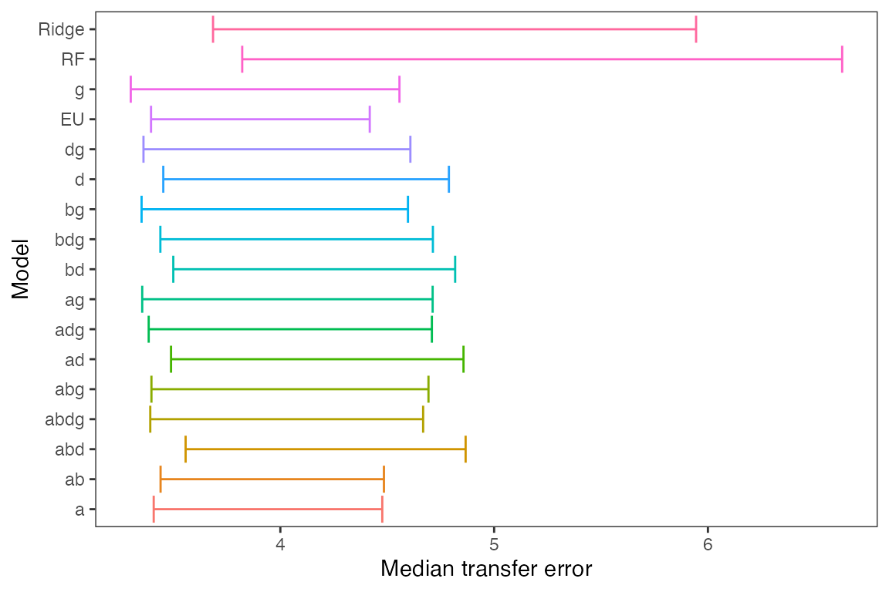

An introduction to `transferUQ` package
transferUQ_demo.Rmd
library("transferUQ")
library("tidyverse")
#> ── Attaching packages ─────────────────────────────────────── tidyverse 1.3.2 ──
#> ✔ ggplot2 3.3.6 ✔ purrr 0.3.4
#> ✔ tibble 3.1.8 ✔ dplyr 1.0.10
#> ✔ tidyr 1.2.0 ✔ stringr 1.4.0
#> ✔ readr 2.1.2 ✔ forcats 0.5.1
#> ── Conflicts ────────────────────────────────────────── tidyverse_conflicts() ──
#> ✖ dplyr::filter() masks stats::filter()
#> ✖ dplyr::lag() masks stats::lag()
library("latex2exp")
set.seed(1)
## Load "CertaintyEquivalents" data used in the paper
data("CertaintyEquivalents")
transfer_error <- CertaintyEquivalents$unnormalized
normalized_transfer <- CertaintyEquivalents$normalized
transfer_deterioration <- lapply(transfer_error, function(err){
t(t(err) / diag(err))
})
inv_normalized_transfer <- lapply(normalized_transfer, function(err){
1 / err
})
## 80% forecast intervals for transfer deterioration
forecast_bounds <-
lapply(names(transfer_deterioration), function(model){
interval <- forecast_interval(transfer_deterioration[[model]], 0.8, "two")
data.frame(model = model,
lb = interval[1],
ub = interval[2])
}) %>% Reduce(rbind, .) %>%
mutate(model = recode(model, `EU_iso` = "EU", `kernel_ridge_rbf` = "Ridge"))
forecast_plot <- forecast_bounds %>%
ggplot(aes(x = model, color = model)) +
geom_errorbar(aes(ymin = lb, ymax = ub)) +
coord_flip() +
theme_bw() +
theme(legend.position = "none",
panel.grid = element_blank()) +
ylab("Transfer deterioration") +
xlab("Model")
forecast_plot
## 80% confidence intervals for expected inverse normalized transfer errors
exp_bounds <-
lapply(names(inv_normalized_transfer), function(model){
interval <- ete_interval(inv_normalized_transfer[[model]], 0.8, "two")
data.frame(model = model,
lb = interval[1],
ub = interval[2])
}) %>% Reduce(rbind, .) %>%
mutate(model = recode(model, `EU_iso` = "EU", `kernel_ridge_rbf` = "Ridge"))
exp_plot <- exp_bounds %>%
ggplot(aes(x = model, color = model)) +
geom_errorbar(aes(ymin = lb, ymax = ub)) +
coord_flip() +
theme_bw() +
theme(legend.position = "none",
panel.grid = element_blank()) +
ylab("Expected inverse normalized transfer error") +
xlab("Model")
exp_plot
## 80% confidence intervals for median (unnormalized) transfer errors
med_bounds <-
lapply(names(transfer_error), function(model){
interval <- qte_interval(transfer_error[[model]], 0.8, betas = 0.5)
data.frame(model = model,
lb = interval$lb[1],
ub = interval$ub[1])
}) %>% Reduce(rbind, .) %>%
mutate(model = recode(model, `EU_iso` = "EU", `kernel_ridge_rbf` = "Ridge"))
med_plot <- med_bounds %>%
ggplot(aes(x = model, color = model)) +
geom_errorbar(aes(ymin = lb, ymax = ub)) +
coord_flip() +
theme_bw() +
theme(legend.position = "none",
panel.grid = element_blank()) +
ylab("Median transfer error") +
xlab("Model")
med_plot
## Compare CPT and RF in terms of worst-case-upper-dominance
check_worstcase_dominance(transfer_error[["abdg"]], transfer_error[["RF"]])
#> tau res
#> 1 0.50 TRUE
#> 2 0.51 TRUE
#> 3 0.52 TRUE
#> 4 0.53 TRUE
#> 5 0.54 TRUE
#> 6 0.55 TRUE
#> 7 0.56 TRUE
#> 8 0.57 TRUE
#> 9 0.58 TRUE
#> 10 0.59 TRUE
#> 11 0.60 TRUE
#> 12 0.61 TRUE
#> 13 0.62 TRUE
#> 14 0.63 TRUE
#> 15 0.64 TRUE
#> 16 0.65 TRUE
#> 17 0.66 TRUE
#> 18 0.67 TRUE
#> 19 0.68 TRUE
#> 20 0.69 TRUE
#> 21 0.70 TRUE
#> 22 0.71 TRUE
#> 23 0.72 TRUE
#> 24 0.73 TRUE
#> 25 0.74 TRUE
#> 26 0.75 TRUE
#> 27 0.76 TRUE
#> 28 0.77 TRUE
#> 29 0.78 TRUE
#> 30 0.79 TRUE
#> 31 0.80 TRUE
#> 32 0.81 TRUE
#> 33 0.82 TRUE
#> 34 0.83 TRUE
#> 35 0.84 TRUE
#> 36 0.85 TRUE
#> 37 0.86 TRUE
#> 38 0.87 TRUE
#> 39 0.88 TRUE
#> 40 0.89 TRUE
#> 41 0.90 TRUE
#> 42 0.91 TRUE
#> 43 0.92 TRUE
#> 44 0.93 TRUE
#> 45 0.94 TRUE
#> 46 0.95 TRUE
#> 47 0.96 TRUE
#> 48 0.97 TRUE
#> 49 0.98 TRUE
#> 50 0.99 TRUE
#> 51 1.00 TRUE
## Compare CPT and RF in terms of everywhere-upper-dominance
check_everywhere_dominance(transfer_error[["abdg"]], transfer_error[["RF"]])
#> tau res
#> 1 0.50 FALSE
#> 2 0.51 FALSE
#> 3 0.52 FALSE
#> 4 0.53 FALSE
#> 5 0.54 FALSE
#> 6 0.55 FALSE
#> 7 0.56 FALSE
#> 8 0.57 FALSE
#> 9 0.58 FALSE
#> 10 0.59 FALSE
#> 11 0.60 FALSE
#> 12 0.61 FALSE
#> 13 0.62 FALSE
#> 14 0.63 FALSE
#> 15 0.64 FALSE
#> 16 0.65 FALSE
#> 17 0.66 FALSE
#> 18 0.67 FALSE
#> 19 0.68 FALSE
#> 20 0.69 FALSE
#> 21 0.70 FALSE
#> 22 0.71 FALSE
#> 23 0.72 FALSE
#> 24 0.73 FALSE
#> 25 0.74 FALSE
#> 26 0.75 FALSE
#> 27 0.76 FALSE
#> 28 0.77 FALSE
#> 29 0.78 FALSE
#> 30 0.79 FALSE
#> 31 0.80 FALSE
#> 32 0.81 FALSE
#> 33 0.82 FALSE
#> 34 0.83 FALSE
#> 35 0.84 FALSE
#> 36 0.85 FALSE
#> 37 0.86 FALSE
#> 38 0.87 FALSE
#> 39 0.88 FALSE
#> 40 0.89 FALSE
#> 41 0.90 FALSE
#> 42 0.91 FALSE
#> 43 0.92 FALSE
#> 44 0.93 FALSE
#> 45 0.94 FALSE
#> 46 0.95 FALSE
#> 47 0.96 TRUE
#> 48 0.97 TRUE
#> 49 0.98 TRUE
#> 50 0.99 TRUE
#> 51 1.00 TRUE